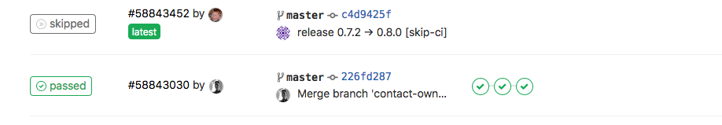

GitLab CI
Create a new release using GitLab CI¶
For this example, we have a python/django application and Docker as a containerization tool.
Goal: Bump a new version every time that a change occurs on the master branch. The bump should be executed automatically by the CI process.
Development Workflow¶
- A developer creates a new commit on any branch (except
master) - A developer creates a merge request (MR) against
masterbranch - When the
MRis merged into master, the 2 stages of the CI are executed - For simplification, we store the software version in a file called
VERSION. You can use any file that you want ascommitizensupports it. - The commit message executed automatically by the
CImust include[skip-ci]in the message; otherwise, the process will generate a loop. You can define the message structure in commitizen as well.
Gitlab Configuration¶
To be able to change files and push new changes with Gitlab CI runners, we need to have a ssh key and configure a git user.
First, let's create a ssh key. The only requirement is to create it without a passphrase:
ssh-keygen -f deploy_key -N ""
The previous command will create a private and public key under the files deploy_key and deploy_key.pub. We will use them later.
For the git user, we need an email and username. You can choose whatever you want; in this example, we choose ci-runner@myproject.com and admin, respectively.
Now, we need to create three environment variables that will be visible for the runners. They should be created in the variables section under settings/ci_cd:

Create SSH_PRIVATE_KEY, CI_EMAIL, CI_USERNAME variables, and fill them with the private_key, email and username that we have created previously.
The latest step is to create a deploy key. To do this, we should create it under the section settings/repository and fill it with the public key generated before. Check Write access allowed; otherwise, the runner won't be able to write the changes to the repository.

If you have more projects under the same organization, you can reuse the deploy key created before, but you will have to repeat the step where we have created the environment variables (ssh key, email, and username).
tip: If the CI raise some errors, try to unprotected the private key.
Defining GitLab CI Pipeline¶
-
Create a
.gitlab-ci.yamlfile that containsstagesandjobsconfigurations. You can find more info here. -
Define
stagesandjobs. For this example, we define twostageswith onejobeach one. - Test the application.
- Auto bump the version. This means changing the file/s that reflects the version, creating a new commit and git tag.
Stages and Jobs¶
image: docker:latest
services:
- docker:dind
variables:
API_IMAGE_NAME: $CI_REGISTRY_IMAGE:$CI_COMMIT_REF_NAME
before_script:
- apk add --no-cache py-pip
- pip install docker-compose
stages:
- test
- auto-bump
test:
stage: test
script:
- docker-compose run -e DJANGO_ENVIRONMENT=dev your_project python manage.py test # run tests
auto-bump:
stage: auto-bump
image: python:3.8
before_script:
- "which ssh-agent || ( apt-get update -qy && apt-get install openssh-client -qqy )"
- eval `ssh-agent -s`
- echo "${SSH_PRIVATE_KEY}" | tr -d '\r' | ssh-add - > /dev/null # add ssh key
- pip3 install -U Commitizen # install commitizen
- mkdir -p ~/.ssh
- chmod 700 ~/.ssh
- echo "$SSH_PUBLIC_KEY" >> ~/.ssh/id_rsa.pub
- '[[ -f /.dockerenv ]] && echo -e "Host *\n\tStrictHostKeyChecking no\n\n" > ~/.ssh/config'
dependencies:
- test
script:
- git remote set-url origin git@gitlab.com:discover/rentee-core.git # git configuration
- git config --global user.email "${CI_EMAIL}" && git config --global user.name "${CI_USERNAME}"
- 'exists=`git show-ref refs/heads/master` && if [ -n "$exists" ]; then git branch -D master; fi'
- git checkout -b master
- cz bump --yes # execute auto bump and push to master
- git push origin master:$CI_COMMIT_REF_NAME
- TAG=$(head -n 1 VERSION) # get the new software version and save into artifacts
- echo "#!/bin/sh" >> variables
- echo "export TAG='$TAG'" >> variables
- git push origin $TAG
only:
refs:
- master
artifacts:
paths:
- variables
So, every time that a developer push to any branch, the test job is executed. If the branch is master and the test jobs success, the auto-bump takes place.
To be able to push using the Gitlab runner, we have to set the ssh key, configure git, and finally execute the auto bump.
After merging the new changed into master, we have the final result:
